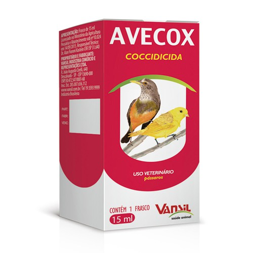
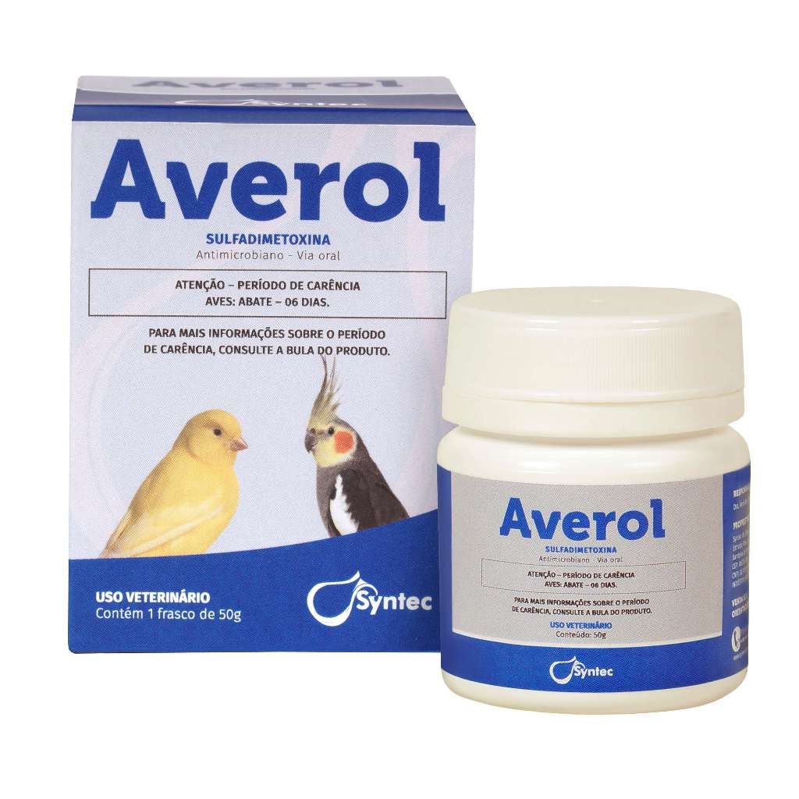

Avecox Coccidicida Vansil 15 ml
Informações: Medicamento indicado para uso em pássaros; Recomendado para tratar e prevenir a coccidiose; Administração via oral. PRODUTO ORIGINAL

Averol Sulfadimetoxina 50g.
Averol Averol é um antibiótico à base de Sulfadimetoxina, indicado para o tratamento das diarreias, cólera, coriza e coccidiose das aves.

Avetrin Vermífugo 10ml
»Vermicida de amplo espectro para pássaro, inclusive para vermes respiratórios »Maior eficácia (mebendazol) Indicações: Contra verminoses gastrointestinais e pulmonares